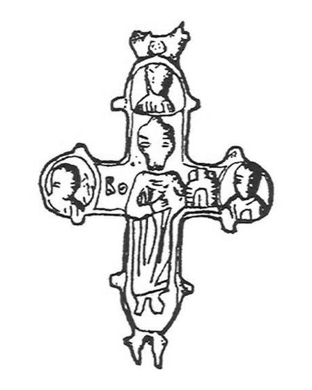
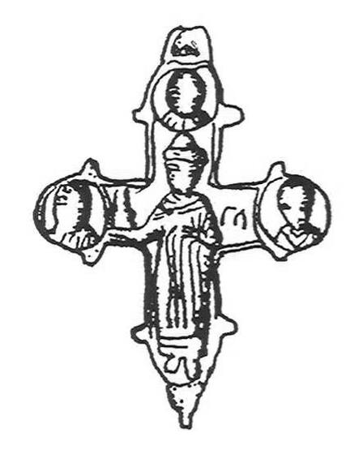

Catalog › CE-0541 · IAH2007-3-4
Encolpion bivalv Boris și Gleb, Ustia (Рис. 3, 4)
sec. XII–XIII (1101–1300) · Ustia, regiunea Ternopil, raionul Borșciv, Ucraina · Muzeul de Studii Locale Borșciv (Борщівський краєзнавчий музей, БКМ)
double-sided reliquary cross (enkolpion); c. XII–XIII (1101–1300); found at Ustia, regiunea Ternopil, raionul Borșciv, Ucraina; kept at Muzeul de Studii Locale Borșciv (Борщівський краєзнавчий музей, БКМ).




Identificare
- Categorie
- Encolpion bivalv (relicvar)
- Tehnică
- Turnare în relief
- Dimensiuni
- Î 77 × L 48 mm
Iconografie
- Avers
- Sf. Boris și Gleb
- Descriere avers
- Valva superioară: cneazul Boris în veșmânt lung de cneaz cu cute, cu o manta prinsă pe umăr cu fibulă; pe cap o căciulă; tivul veșmântului este decorat cu o bordură orizontală; în mâna dreaptă ține o bisericuță cu o singură turlă; în stânga figurii literele «Бо»; picioarele sunt redate schematic. În medalionul de sus și în cele laterale, sfinți șezând drepți, cu detalii fine ale chipurilor (păr scurt, ochi cu pupile, nasuri, buze, veșminte cu cute).
- Revers
- Sf. Boris și Gleb
- Descriere revers
- Valva inferioară: cneazul Gleb în același veșmânt lung cu cute și într-o manta prinsă pe umărul stâng cu fibulă; pe cap o căciulă cneazală cu margine de blană; în mâna stângă ține o bisericuță cu trei turle, mâna dreaptă este pe jumătate îndoită; picioarele sunt schematice; în stânga sfântului inscripția «ГЛ». În trei medalioane ale brațelor sunt sfinți cu chipuri bine detaliate, în veșminte cu cute.
- Inscripții
- Бо; ГЛ
Datare și atribuire
- Datare
- sec. XII–XIII (1101–1300)
- Tipologie
- Tip Boris și Gleb
Descoperire
- Localitate
- Ustia
- Regiune
- regiunea Ternopil, raionul Borșciv
- Țară
- Ucraina
- Context
- Necunoscut
- Coordonate
- 48.8016° N, 26.0380° E
- Precizia locului
- Doar localitatea
Păstrare și referințe
- Colecție
- Muzeul de Studii Locale Borșciv (Борщівський краєзнавчий музей, БКМ)
- Bibliografie
- М. Ягодинська, Нові культові речі з давньоруських пам’яток Західного Поділля, în „Матеріали і дослідження з археології Прикарпаття і Волині”, 11, 2007, p. 346–357 [Ягодинська 2007], p. 350, Рис. 3, 4, reprodusă la Рис. 3, 4 (p. 351).
- Figura
- Рис. 3, 4
- Planșe
- Ягодинська 2007, p. 351
- Analogii
- Cruci cu Boris și Gleb răspândite în Rusia Kieveană și în afara ei (Дончева-Петкова 1985, p. 46, fig. 1; Рыбаков 1971, p. 79, fig. 102; Фіголь 1997, p. 178).
- Observații
- Păstrare excelentă, imagini clare. Dimensiuni: 9,2×4,8 cm cu ureche, 7,7×4,8 cm fără ureche. Valvele sunt unite printr-o balama cu ureche bicon formată din două jumătăți conice. Fără număr de inventar. Material: aliaj de cupru, fără precizare suplimentară. Coordonate: ale orașului Borșciv, centrul raionului (localitatea nu a putut fi localizată), aproximative, nu date în sursă.
Citare: Corpus Encolpiorum, CE-0541, Encolpion bivalv Boris și Gleb, Ustia (Рис. 3, 4), https://vitaliejosanu1979-ux.github.io/primul-meu-proiect/piese/IAH2007-3-4/ (accesat 2026-10-17).